Darken
min(A, B)
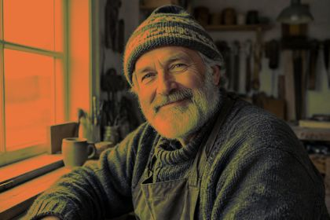
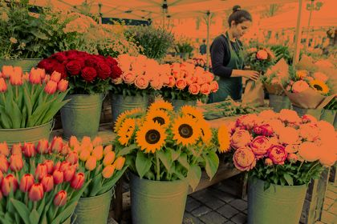
image.darken("#e8743b")Reference
A blend mode combines the image (the base, A) with a blend layer
(B). The layer can be a hex color, a NumPy array the same size as the image
— a gradient, a texture, another photo — or anything that broadcasts to it. Every mode
takes an optional opacity from 0 to 1. Below, all 14 modes
blend #e8743b into the same three photos.
The unedited photos that every blend mode below is applied to.
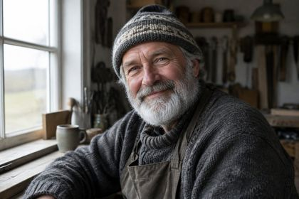
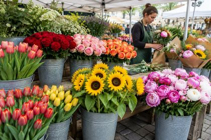
The result is never lighter than the base. White is neutral.
min(A, B)


image.darken("#e8743b")A × B
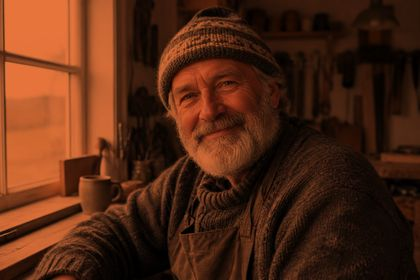
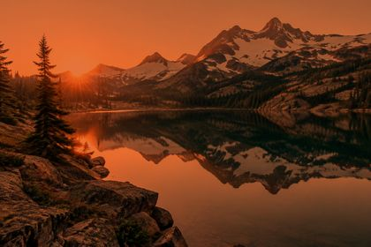
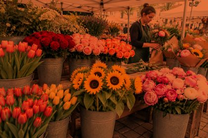
image.multiply("#e8743b")1 − (1 − A) / B
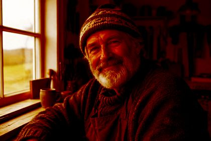
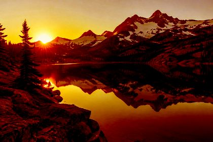
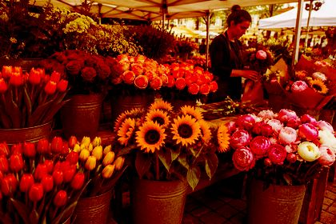
image.color_burn("#e8743b")A + B − 1
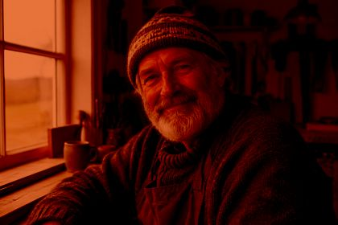
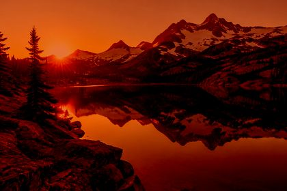
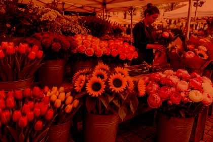
image.linear_burn("#e8743b")The result is never darker than the base. Black is neutral.
max(A, B)
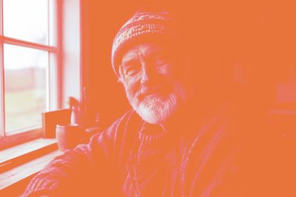
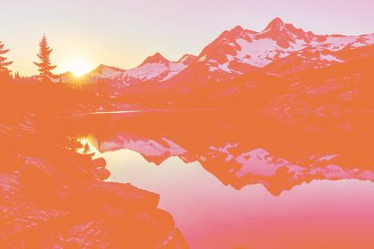
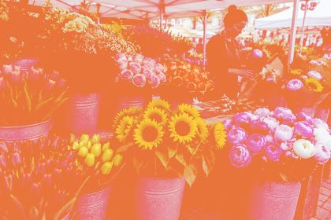
image.lighten("#e8743b")1 − (1 − A)(1 − B)
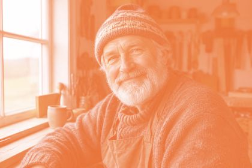
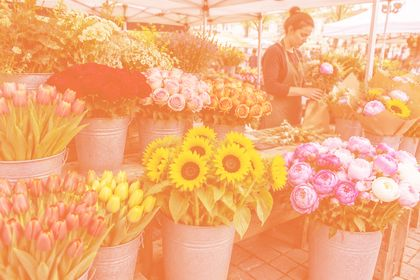
image.screen("#e8743b")A / (1 − B)
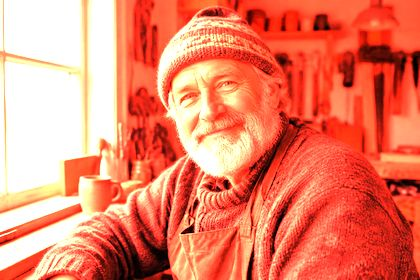
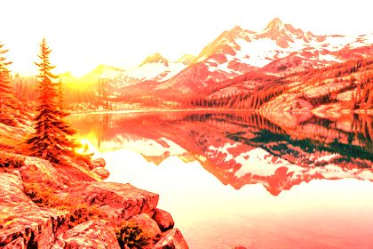
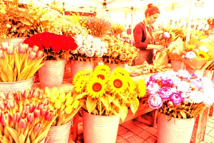
image.color_dodge("#e8743b")A + B
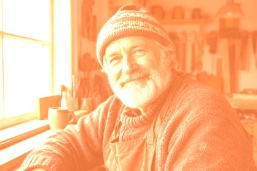
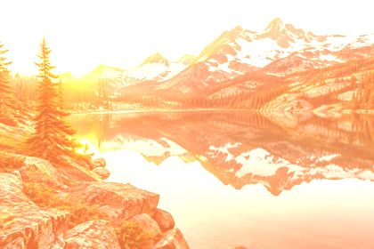
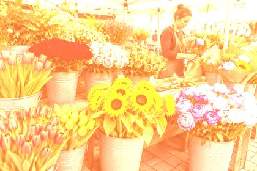
image.linear_dodge("#e8743b")Darken below mid-gray, lighten above it. 50% gray is neutral for most of these modes.
2AB if A ≤ ½, else 1 − 2(1 − A)(1 − B)
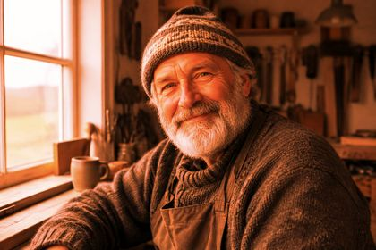
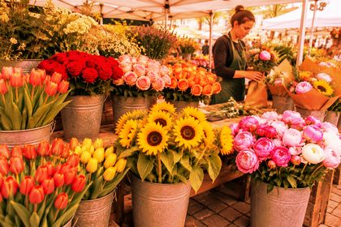
image.overlay("#e8743b")Pegtop soft light
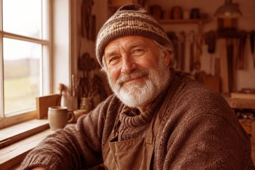
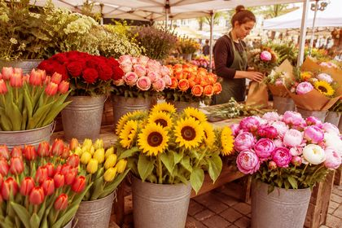
image.soft_light("#e8743b")2AB if B ≤ ½, else 1 − 2(1 − A)(1 − B)
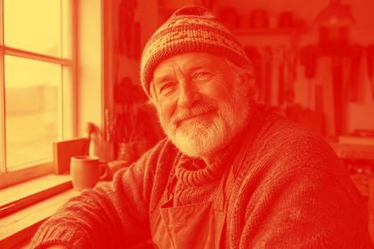
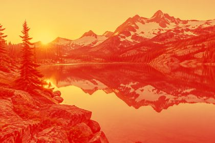
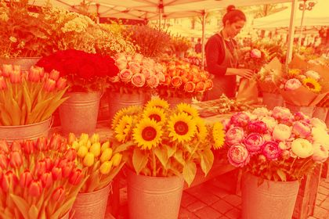
image.hard_light("#e8743b")Color burn if B ≤ ½, else color dodge
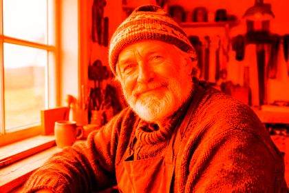
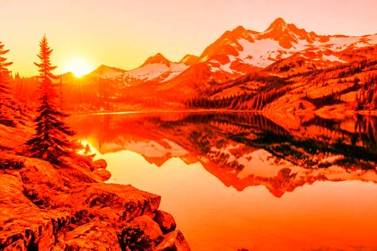
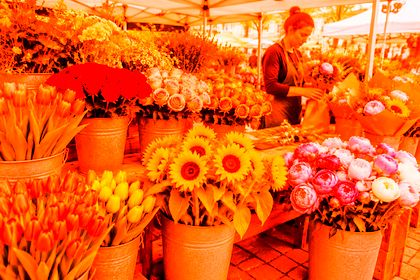
image.vivid_light("#e8743b")A + 2B − 1
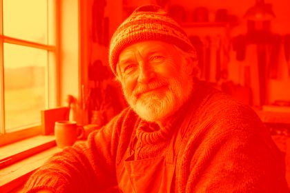
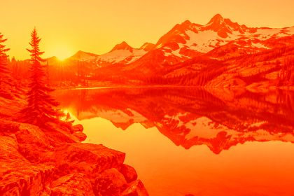
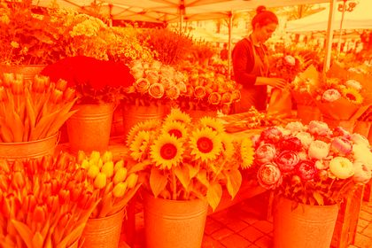
image.linear_light("#e8743b")Replace A depending on B
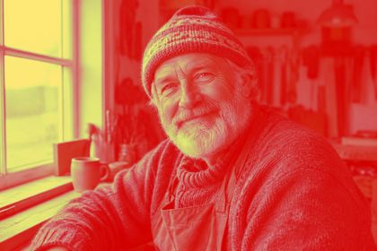
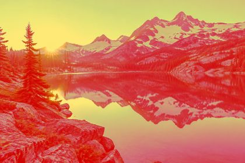
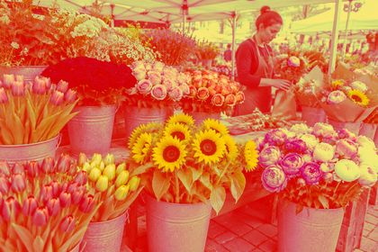
image.pin_light("#e8743b")Opacity mixes the blended result back with the original:
overlay("#ff4f8b", opacity=…) on the mountain-lake photo.

opacity=0opacity=0.25opacity=0.5opacity=0.75opacity=1The same mode gives very different moods depending on the color:
soft_light(color) on the portrait photo.
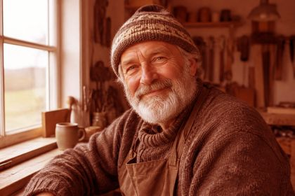
#ff6b35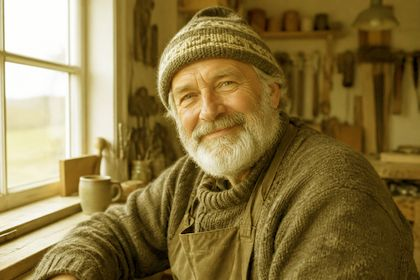
#ffd23f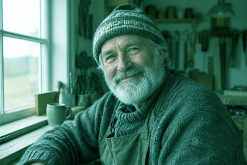
#3bceac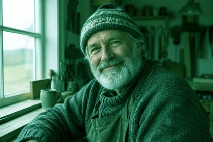
#0ead69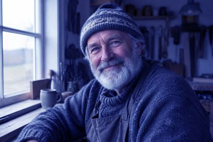
#4361ee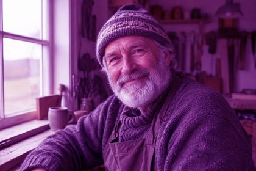
#c42bd8Pass a NumPy array instead of a hex string to blend per pixel. The creative effects examples use this for a vignette, a graduated filter and a double exposure.
h, w, _ = image.get_image_as_array().shape
t = np.linspace(0, 1, h)[:, np.newaxis, np.newaxis] # 0 at the top → 1 at the bottom
gradient = (1 - t) * np.array([1.0, 0.6, 0.3]) + t # orange → white
image.multiply(gradient) # white is neutral for multiply